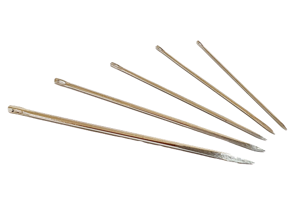
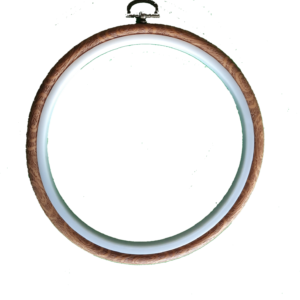

Co muszę wiedzieć, zanim zacznę przygodę z haftowaniem?
Przede wszystkim trzeba uzbroić się w cierpliwość! To zrozumiałe, że pierwsze próby nie są idealne, a wprawa przyjdzie z czasem. Dlatego nie warto się zniechęcać po pierwszym projekcie, kolejne będą lepsze. Aby zacząć haftować, nie trzeba wiele, a listę najważniejszych przedmiotów znajdziesz poniżej.
Materiał
Aby haftowanie było łatwiejsze, najlepiej wybrać mało rozciągliwą tkaninę. Świetnie sprawdzi się do tego lniane, bawełniane bądż mieszne płótno. Można je zakupić w każdej pasmanterii.
Na pierwszą próbę można użyć nawet skrawków ze starych ubrań, jeśli chcemy tylko sprawdzić czy spodoba nam się ta aktywność.
Do haftu krzyżykowego najpiej wybrać kanwę - znacznie ułatwia liczenie krzyżyków. Dostępne są plastikowe, lniane lub konopne.
Mulina
Jest to najbardziej popularna nić do haftu. Składa się z 6 mniejszych niteczek, dzięki którym możemy dobrać odpowiednią grubość do naszego projektu.
Większość wzorów zawiera opis tego, ile nitek trzeba użyć by uzyskać zamierzony efekt. Najpopularniejszą firmą produkującą mulinę jest DMC, więc według ich numeracji kolorów
zazwyczaj są one podawane we wzorach. W Polsce również popularna jest marka Ariadna, jednak jej numeracja jest inna. Kolory także różnią się wyrazistością i odcieniami od tych tworzonych przez DMC.
W kwestii ceny, wydajniejsza jest mulina Ariadna.
Igły
Wybór igły zależy od tego z ilu nitek muliny używamy. Im mniej nitek, tym większy numer igły.
Tamborek
Nie jest obowiązkowy, jednak znacznie ułatwia haft. Zaciskane obręcze napinają materiał. W zależności od wielkości naszego projektu dobieramy jego rozmiar. Najpopularniejsze są tamborki okrągłe, jednak są dostępne w różnych ozdobnych kształtach - owale, serca, kwadraty.
Dodatkowe akcesoria
Jest to lista przedmiotów, w które warto się zaopatrzyć gdy wiemy, że chcemy kontynuować naszą przygodę z haftem:
- Nawlekacz do igieł,
- Rozpruwacz do nici - w razie błędów,
- Stabilizator rozpuszczalny w wodzie - służy do haftowania własnych wzorów, bez potrzeby rysowania po materiale,
- Needle minder - magnetyczny uchwyt na igłę,
- Bobinki - plastikowe bądź tekturowe, ułatwiające przechowywanie muliny.